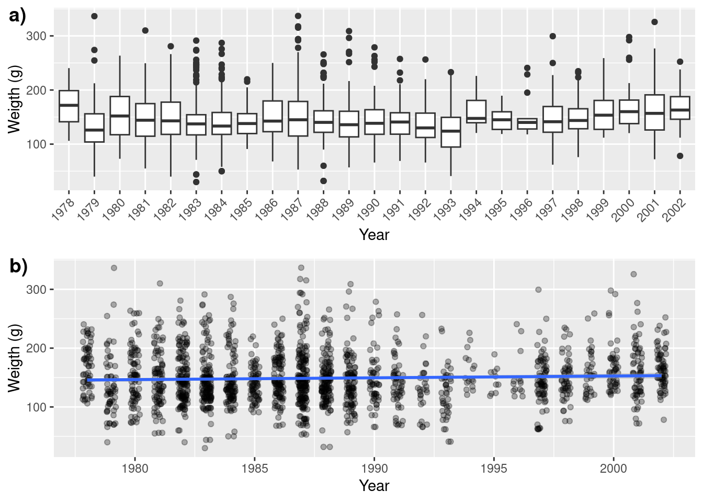
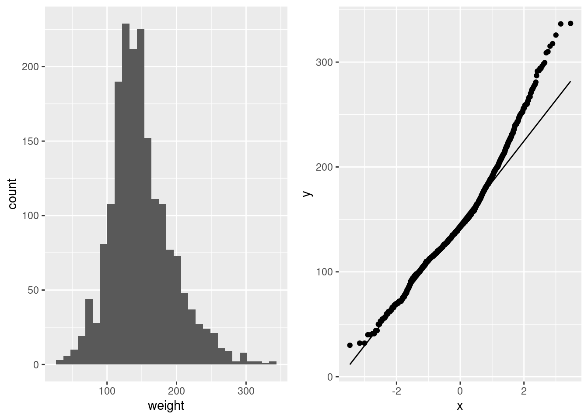
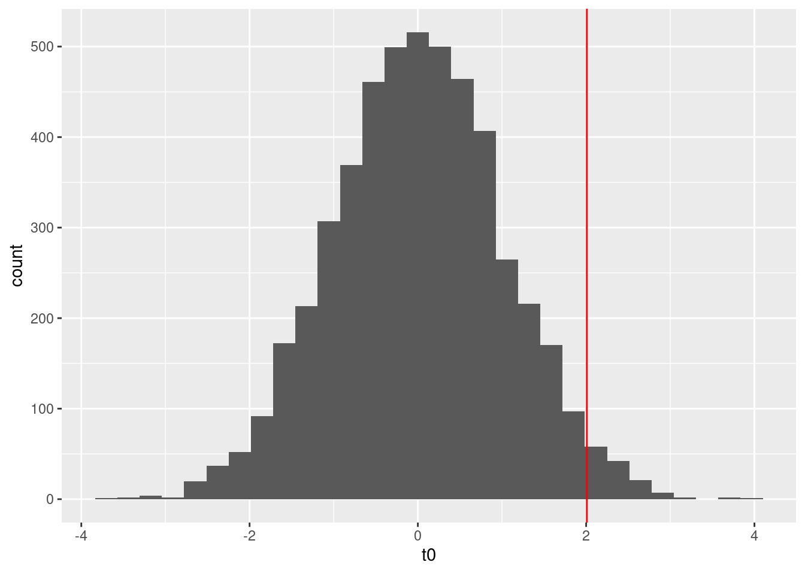
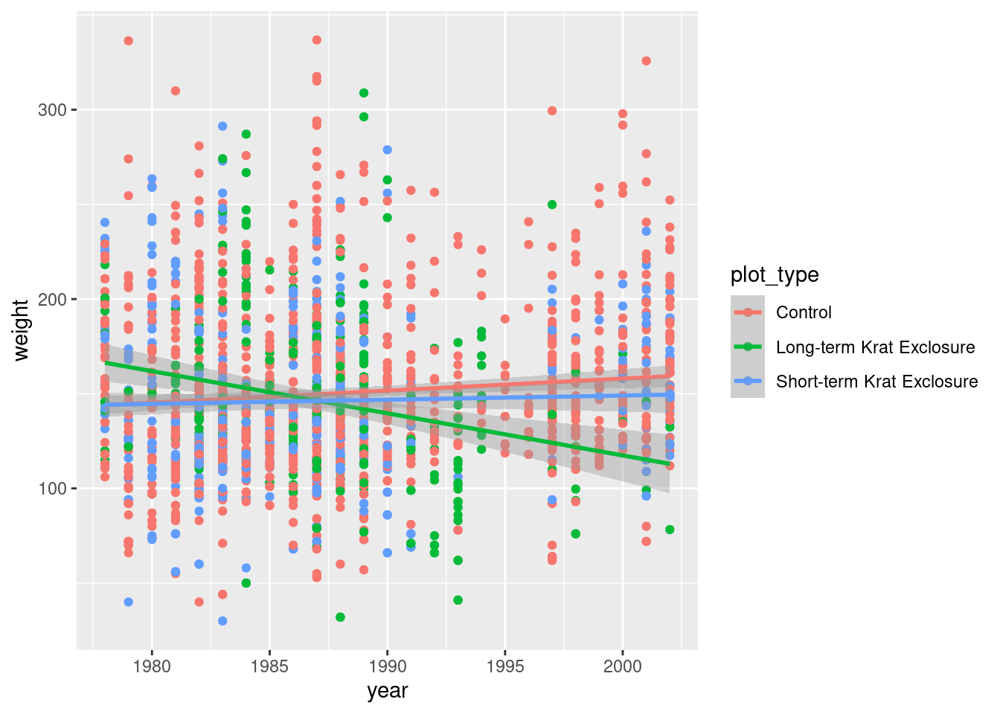

Tests de randomisation et bootstrap
Ce travail doit être remis avant le 3 février à 17h sur Moodle.
Données
Ce laboratoire utilise la base de données Portal, qui contient des données de suivi à long terme de plusieurs espèces de rongeurs sur un site d’étude en Arizona.
Ernest, M., Brown, J., Valone, T. and White, E.P. (2018) Portal Project Teaching Database. https://figshare.com/articles/Portal_Project_Teaching_Database/1314459.
Le tableau de données portal_surveysB.csv contient une rangée par individu capturé. Les variables incluent la date (jour, mois, année), le numéro de parcelle, le code d’espèce, le sexe, la longueur de patte arrière et le poids des individus.
library(tidyverse)
library(boot)
library(cowplot)
library(permuco)
surveys <- read.csv("donnees/portal_surveysB.csv")
glimpse(surveys)## Rows: 36,701
## Columns: 10
## $ X <int> 1, 2, 3, 4, 5, 6, 7, 8, 9, 10, 11, 12, 13, 14, 15, 16,…
## $ record_id <int> 1, 2, 3, 4, 5, 6, 7, 8, 9, 10, 11, 12, 13, 14, 15, 16,…
## $ month <int> 7, 7, 7, 7, 7, 7, 7, 7, 7, 7, 7, 7, 7, 7, 7, 7, 7, 7, …
## $ day <int> 16, 16, 16, 16, 16, 16, 16, 16, 16, 16, 16, 16, 16, 16…
## $ year <int> 1977, 1977, 1977, 1977, 1977, 1977, 1977, 1977, 1977, …
## $ plot_id <int> 2, 3, 2, 7, 3, 1, 2, 1, 1, 6, 5, 7, 3, 8, 6, 4, 3, 2, …
## $ species_id <chr> "NL", "NL", "DM", "DM", "DM", "PF", "PE", "DM", "DM", …
## $ sex <chr> "M", "M", "F", "M", "M", "M", "F", "M", "F", "F", "F",…
## $ hindfoot_length <int> 32, 33, 37, 36, 35, 14, NA, 37, 34, 20, 53, 38, 35, NA…
## $ weight <dbl> NA, NA, NA, NA, NA, NA, NA, NA, NA, NA, NA, NA, NA, NA…Le tableau de données portal_plots.csv indique le type de traitement appliqué à chaque parcelle. Les traitements visent à exclure différents types de rongeurs: “Control” = aucune clôture, pas d’exclusion; “Rodent Exclosure” = clôture, tous les rongeurs exclus; “Krat Exclosure” = clôture avec porte laissant passer les petits rongeurs, mais pas les rats-kangourous. Ces traitements ont été assignés aléatoirement après délimitation des parcelles.
plots <- read.csv("donnees/portal_plots.csv")
glimpse(plots)## Rows: 24
## Columns: 2
## $ plot_id <int> 1, 2, 3, 4, 5, 6, 7, 8, 9, 10, 11, 12, 13, 14, 15, 16, 17, 1…
## $ plot_type <chr> "Spectab exclosure", "Control", "Long-term Krat Exclosure", …
Néotoma albigula
1. Tests de randomisation
- Tout d’abord, nous devons préparer les données pour l’analyse:
Dans le tableau
surveysne gardez que les captures de Néotoma albigula (NL) où le poid des n’est pas manquant. Rappel: La fonctionis.na(x)vérifie sixest une valeur manquante.Finalement, joignez les tableaux
surveysetplotspour connaître les traitements des parcelles liés à chaque observation. Vous pouvez utiliser la fonctionmergedans R ou la fonctioninner_join, qui requiet le package dplyr. Nommez le tableau résultantsurveys_plotset n’y conservez que les observations des sites de type “Long-term Krat Exclosure”,“Short-term Krat Exclosure”, et “Control”.
surveys_plots= surveys %>% filter(!is.na(weight)) %>% filter(species_id=="NL") %>%
inner_join(plots) %>%
filter(plot_type %in% c("Long-term Krat Exclosure","Short-term Krat Exclosure","Control") )## Joining with `by = join_by(plot_id)`Ensuite, visualisez la distribution du poids (weight, en
grammes) des individus selon l’année.
Ces 2 visualisations sont équivalente. Quelques points à noter:
1) j’ai indiqué l’unité sur l’axe des y,
2) j’ai ajusté les étiquettes de l’axe des x pour qu’il soit bien lisible (fig a),
3) j’ai ajouté du bruit horizontale et de la transparence au points (Fig b) pour éviter de masquer des points se superposant.
ga <- ggplot(surveys_plots,aes(x=as.factor(year),y=weight))+
geom_boxplot()+
labs(x="Year",y="Weigth (g)")+ # change le titre des axes
theme(axis.text.x = element_text(angle = 45,hjust = 1)) # texte en angle
gb <- ggplot(surveys_plots,aes(x=year,y=weight))+
geom_point(position = position_jitter(w=0.2), # ajoute du bruit sur la largeur
alpha=0.3)+ # ajuste la transparence
geom_smooth(method = "lm")+ # ajoute une droite de régression avec lm
labs(x="Year",y="Weigth (g)")
plot_grid(ga,gb, ncol=1,labels = c("a)","b)")) # combine les 2 figure
- Nous utiliserons un test de randomisation basé sur la régression linéaire pour déterminer si la masse des individus a diminuer avec le temps. Pourquoi penses-tu qu’une approache par permutation soit appropriée ? Pour ce faire, nous écrirons une fonction qui randomise les années, avant d’exécuter la régression.
Les distributions de poids sont non normal et non homogène, ce qui pourrait biaiser les estimées, leurs CI et les test statistique. On peut le voir sur l’histograme qui a une queue longue à droite et sur le graphique de quantile ou il y a une déviation au niveau des haute valeurs. Une permutation est plus approprié qu’un bootstrap puisque nous voulons un test statisique.
ga <- ggplot(surveys_plots,aes(x=weight))+geom_histogram()
gb <- ggplot(surveys_plots,aes(sample=weight))+geom_qq()+geom_qq_line()
plot_grid(ga,gb,ncol=2)## `stat_bin()` using `bins = 30`. Pick better value with `binwidth`.
- Créez la fonction décrite en (b), qui effectue une randomisation de
year, exécute une régression du poids des individus en fonction de l’année, puis retourne la valeur \(t\). Déterminez la distribution de cette statistique pour l’hypothèse nulle avec 4999 permutations. Quelle est la valeur \(p\) pour la valeur \(t\) observée si il n’y a eu aucun changement en masse des individus capturés au court du temps?
mod1 <- lm(weight~year,data=surveys_plots)
summary(mod1)##
## Call:
## lm(formula = weight ~ year, data = surveys_plots)
##
## Residuals:
## Min 1Q Median 3Q Max
## -117.39 -29.00 -6.23 24.13 190.25
##
## Coefficients:
## Estimate Std. Error t value Pr(>|t|)
## (Intercept) -460.8480 303.6186 -1.518 0.1292
## year 0.3067 0.1527 2.008 0.0448 *
## ---
## Signif. codes: 0 '***' 0.001 '**' 0.01 '*' 0.05 '.' 0.1 ' ' 1
##
## Residual standard error: 44.3 on 1868 degrees of freedom
## Multiple R-squared: 0.002154, Adjusted R-squared: 0.00162
## F-statistic: 4.033 on 1 and 1868 DF, p-value: 0.04476t1 <- coef(summary(mod1))[2,3]
permufun <- function(){
surv_perm <- surveys_plots %>% mutate(year_perm=sample(surveys_plots$year))
mod0 <- lm(weight~year_perm,data=surv_perm)
t0=coef(summary(mod0))[2,3]
return(t0)
}
nperm=4999
t0 <- replicate(nperm,permufun())
pv= (sum(abs(t0) >= abs(t1)) + 1) / (nperm + 1)
ggplot()+geom_histogram(aes(x=t0))+geom_vline(xintercept = t1,color="red")## `stat_bin()` using `bins = 30`. Pick better value with `binwidth`.
Le déclin en masse semble être significatif. En effet, avec une valeurs de t observé est de
2.008, nous obtenon une valeur de p de0.05suite à la permutation. Ceci est en ligne avec la valeur de p rapporté par la régression linéaire qui était de0.045.
# Point Bonus:
# Cette permutation ne respecte pas la structure annuel des données
# car elle ne gardes pas les indivius d'une même année ensemble
# ce poroblème peut être régler en changeant le re-échantillonage pour les garder ensemble.
# un modèle linéaire mixed aurait aussi été mieux, mais ne ne sommes pas encore rendu là.
permufun_BONUS <- function(){
permu <- data.frame(year=unique(surveys_plots$year),
year_perm=sample(unique(surveys_plots$year)))
surv_perm <- surveys_plots %>% left_join(permu,by="year")
mod0 <- lm(weight~year_perm,data=surv_perm)
t0=coef(summary(mod0))[2,3]
return(t0)
}
t0b <- replicate(nperm,permufun_BONUS())
(sum(abs(t0b) >= abs(t1)) + 1) / (nperm + 1)## [1] 0.211# le déclin n'est pas VRAIMENT significatif
# cette permutation prend en compte la non-indépendance des années
# un peu comme si nous avions fait un modèle mixte
# la valeur de P obtenue est d'ailleur assez similaire
# (noter que les p values ne sont pas rapportées lmer pour de bonne raisons.
# la suite n'est qu'une approximation)
library(lme4)## Loading required package: Matrix##
## Attaching package: 'Matrix'## The following objects are masked from 'package:tidyr':
##
## expand, pack, unpacklmm <- lmer(weight~year+(1|year),data=surveys_plots)
coef(summary(lmm))## Estimate Std. Error t value
## (Intercept) -504.699755 560.121193 -0.9010546
## year 0.328677 0.281576 1.1672765dt(coef(summary(lmm))["year","t value"], nrow(surveys_plots)-3)## [1] 0.2018045- La différence est-elle significative avec un seuil \(\alpha = 0.01\)?
non, la probability que la valeur de t observée soit obtenue par hasard (hypothese nulle) est > 0.01
- Effectuez un test de permutation pour tester si les changements en masses diffèrent selon les traitements (ie. si il y a une intéraction entre year et plot_type).
ggplot(data = surveys_plots,aes(x=year,y=weight,color=plot_type))+
geom_point()+
geom_smooth(method = "lm")
res=lmperm(weight~year*plot_type,data=surveys_plots)
res$table[,-c(3,5,6)]##
##
## Estimate Std. Error
## (Intercept) -1116.1640 373.9887
## year 0.6371 0.1881
## plot_typeLong-term Krat Exclosure 5685.8430 1068.7573
## plot_typeShort-term Krat Exclosure 823.8891 715.2799
## year:plot_typeLong-term Krat Exclosure -2.8632 0.5378
## year:plot_typeShort-term Krat Exclosure -0.4164 0.3599
## parametric Pr(>|t|) resampled Pr(>|t|)
## (Intercept) 0.0028774959
## year 0.0007200466 0.0010
## plot_typeLong-term Krat Exclosure 0.0000001162 0.0002
## plot_typeShort-term Krat Exclosure 0.2495339367 0.2330
## year:plot_typeLong-term Krat Exclosure 0.0000001141 0.0002
## year:plot_typeShort-term Krat Exclosure 0.2474389604 0.2314ce test suggère que l’intéraction est très importante. En effet,l’interaction entre l’année et le site d’exclos à long terme est significative (pv=
0), suggérant que le poid diminue plus rapidement dans ce site que dans le site controle.
# la fonction lmperm, bien que fort utile n'offre pas beaucoup de flexibilité.
# si nous voulons continuer à maintenir la structure annuel des années,
# la permutation doit être calculé à la main.
# cela est peut être dificille a faire si l'on veut maintenir
# la covariance entre variables explicatives. Heureusement, les types de site et
# l'année sont biologiquement et méthodologiquement indépendants.
mod2 <- lm(weight~year*plot_type,data=surveys_plots)
t2 <- coef(summary(mod2))[,3]
permufun2_BONUS <- function(){
permu <- data.frame(year=unique(surveys_plots$year),
year_perm=sample(unique(surveys_plots$year)))
surv_perm <- surveys_plots %>% left_join(permu,by="year")
mod0 <- lm(weight~year_perm*plot_type,data=surv_perm)
t0=coef(summary(mod0))[,3]
return(t0)
}
t0c <- replicate(nperm,permufun2_BONUS())
pv <- (sapply(1:length(t2), function(x) sum(abs(t0c[x,]) >= abs(t2[x]))) + 1) / (nperm + 1)
lmm2 <- lmer(weight~year*plot_type+(1|year)+(1|plot_id),data=surveys_plots)
cbind(coef(summary(mod2)),pv_perm=pv,
pv_lmm=round(dt(coef(summary(lmm2))[,"t value"],nrow(surveys_plots)-8),5)
)## Estimate Std. Error t value
## (Intercept) -1116.1639891 373.9886501 -2.984486
## year 0.6370609 0.1880634 3.387480
## plot_typeLong-term Krat Exclosure 5685.8430099 1068.7573330 5.320051
## plot_typeShort-term Krat Exclosure 823.8891053 715.2799495 1.151841
## year:plot_typeLong-term Krat Exclosure -2.8631983 0.5378367 -5.323546
## year:plot_typeShort-term Krat Exclosure -0.4164000 0.3599102 -1.156955
## Pr(>|t|) pv_perm pv_lmm
## (Intercept) 0.002877495914 0.1000 0.28899
## year 0.000720046630 0.0536 0.22993
## plot_typeLong-term Krat Exclosure 0.000000116241 0.0144 0.00024
## plot_typeShort-term Krat Exclosure 0.249533936671 0.4614 0.28722
## year:plot_typeLong-term Krat Exclosure 0.000000114061 0.0142 0.00025
## year:plot_typeShort-term Krat Exclosure 0.247438960391 0.4590 0.287962. Bootstrap
- Calculez l’intervalle de confiance à 99% pour le changement en masse au court du temps pour chaque traitement.
lm_time <- function(dat, i) {
mod <- lm(weight~year*plot_type,data=dat[i,])
c(coef(mod),
penteShortExclo=coef(mod)[2]+coef(mod)[6],
penteLongExclo=coef(mod)[2]+coef(mod)[5])
}
boot_hab <- boot(surveys_plots, lm_time, R = 10000)
# il est cependant mieux de stratifier par type de site pour s'assurer
# de garder des représentant de chacun d'eux dans chaque re-échantillonage
boot_hab <- boot(surveys_plots, lm_time,R = 10000,
strata = as.factor(surveys_plots$plot_id ))
#Intervale de confiance l'intéraction entre année et l'exclos à long terme
boot.ci(boot_hab,index = 5,type = "bca",conf = 0.99)## BOOTSTRAP CONFIDENCE INTERVAL CALCULATIONS
## Based on 10000 bootstrap replicates
##
## CALL :
## boot.ci(boot.out = boot_hab, conf = 0.99, type = "bca", index = 5)
##
## Intervals :
## Level BCa
## 99% (-4.106, -1.631 )
## Calculations and Intervals on Original Scale#Intervale de confiance pour la pente dans les sites Control
boot.ci(boot_hab,index = 2,type = "bca",conf = 0.99)## BOOTSTRAP CONFIDENCE INTERVAL CALCULATIONS
## Based on 10000 bootstrap replicates
##
## CALL :
## boot.ci(boot.out = boot_hab, conf = 0.99, type = "bca", index = 2)
##
## Intervals :
## Level BCa
## 99% ( 0.1544, 1.1205 )
## Calculations and Intervals on Original Scale#Intervale de confiance pour la pente dans les sites shortExclos
boot.ci(boot_hab,index = 7,type = "bca",conf = 0.99)## BOOTSTRAP CONFIDENCE INTERVAL CALCULATIONS
## Based on 10000 bootstrap replicates
##
## CALL :
## boot.ci(boot.out = boot_hab, conf = 0.99, type = "bca", index = 7)
##
## Intervals :
## Level BCa
## 99% (-0.4990, 0.9079 )
## Calculations and Intervals on Original Scale#Intervale de confiance pour la pente dans les sites longExclos
boot.ci(boot_hab,index = 8,type = "bca",conf = 0.99)## BOOTSTRAP CONFIDENCE INTERVAL CALCULATIONS
## Based on 10000 bootstrap replicates
##
## CALL :
## boot.ci(boot.out = boot_hab, conf = 0.99, type = "bca", index = 8)
##
## Intervals :
## Level BCa
## 99% (-3.348, -1.058 )
## Calculations and Intervals on Original Scale- L’intervalle de confiance obtenu en a) est-il cohérent avec le résultat du test en 1.e)? Est-ce que le bootstrap représente bien le processus d’échantillonnage pour ce problème?
oui, les CI sont en ;ligne avec le test de randomisation 1e.
en partie,le bootstrap est représentatif de l’échantillonage si il a été fait de façon stratifié. Sinon, il aurait pu être stratifié. Une stratification par année-site aurait aussi été approprié. Cependant, le bootstrap est basé sur une régression linéaire. il souffre donc lui aussi des problèmes de pseudo-réplication. une approche par modèle mixed aurait pu être meilleures en générale.
- Utilisez la méthode du bootstrap avec 10 000 réplicats pour calculer la différence de poids des individus entre le début et la fin de l’étude pour les traitements “Long-term Krat Exclosure” et “Control”. Effectuez une correction du biais et rapportez la différence corrigée avec son erreur-type.
diffBootFun <- function(dat,i){
booted <- dat[i,]
mean(booted$weight[booted$year==max(booted$year)])-mean(booted$weight[booted$year==min(booted$year)])
}
dat_ex <- surveys_plots %>% filter(plot_type=="Long-term Krat Exclosure") %>% filter(year %in% range(year))
dat_ctrl <- surveys_plots %>% filter(plot_type=="Control") %>% filter(year %in% range(year))
boot_ex <- boot(dat_ex,diffBootFun,strata = as.factor(dat_ex$plot_id), R = 10000)
# Biais
bias_ex <- mean(boot_ex$t) - boot_ex$t0
corrected <- boot_ex$t0-bias_ex
# Erreur-type
se_ex <- sd(boot_ex$t)
print(paste("la différence pour le traitement long Exclosure est de",corrected))## [1] "la différence pour le traitement long Exclosure est de -52.6419480857838"print(paste("l'erreur-type est de",se_ex))## [1] "l'erreur-type est de 20.8643347208553"boot_ctrl <- boot(dat_ctrl,diffBootFun,strata = as.factor(dat_ctrl$plot_id),R = 10000)
bias_ctrl <- mean(boot_ctrl$t) - boot_ctrl$t0
correctedctrl <- boot_ctrl$t0-bias_ctrl
# Erreur-type
se_ctrl <- sd(boot_ctrl$t)
print(paste("la différence pour le traitement long Exclosure est de",correctedctrl))## [1] "la différence pour le traitement long Exclosure est de 6.72540557545154"print(paste("l'erreur-type est de",se_ctrl))## [1] "l'erreur-type est de 7.19543721637956"grille d’évaluation
| q | element | point |
|---|---|---|
| 1a | got data frame with 1870 rows | 0.5 |
| 1a | got data frame with 643 rows | 0.25 |
| 1a | made a figure showing weight~year | 0.25 |
| 1a | figure had units and no overlap hiding points | 0.25 |
| 1b | mention non-normality or non-homogeneity | 0.33 |
| 1b | a figure or test to show it | 0.33 |
| 1b | permutation for testing | 0.33 |
| 1c | made the wright permutation function | 0.5 |
| 1c | made a working permutation function | 0.25 |
| 1c | properly calculated p-value | 0.5 |
| 1c | * bonus: thinks about data structure and year* | 1 |
| 1d | no | 1 |
| 1e | modeled the year*plot_type | 0.5 |
| 1e | used lmperm | 0.5 |
| 2a | used the previous model | 0.17 |
| 2a | used a bootstrap to get CI | 0.17 |
| 2a | got CI for 3 slopes | 0.17 |
| 2b | yes consistent | 0.5 |
| 2b | talk about non-independance | 0.5 |
| 2c | correct bootstrap | 0.5 |
| 2c | correct formula for bias, se, and the correction | 0.5 |